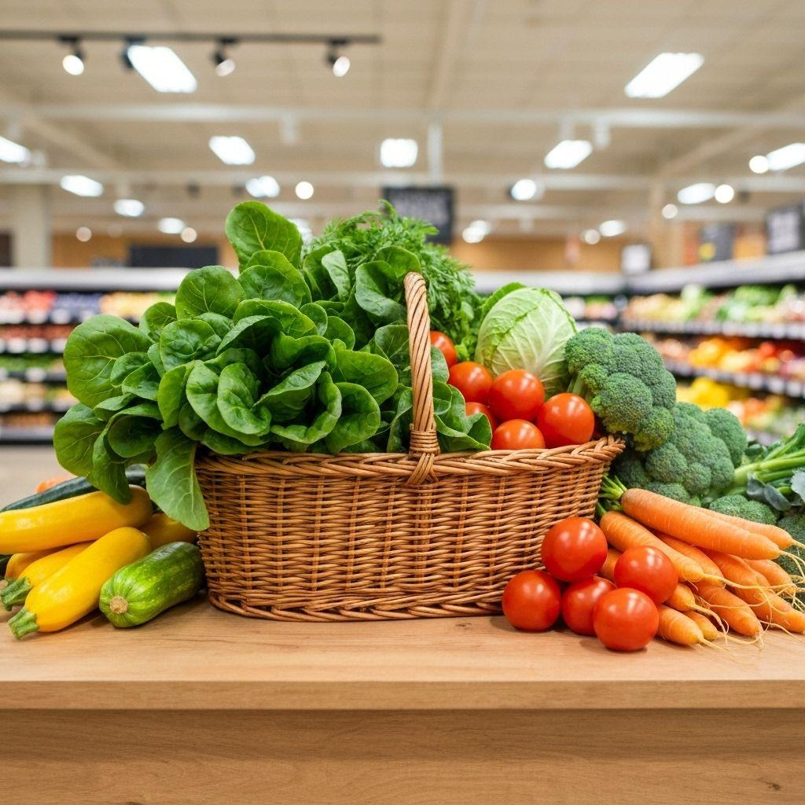

100% Frais
Des produits sélectionnés avec soin pour garantir leur fraîcheur.
Découvrez des légumes de qualité, sélectionnés avec soin et disponibles au meilleur prix au Sénégal.

Clients satisfaits
Catégories
Livraison rapide
Nous vous offrons bien plus que des légumes. Nous vous assurons fraîcheur, qualité et un service fiable.
Des produits sélectionnés avec soin pour garantir leur fraîcheur.
Nous valorisons les producteurs locaux et nos clients.
Un service de livraison adapté à vos besoins.
Des solutions de paiement simples et pratiques.
Explorez nos différentes catégories de légumes et trouvez les produits adaptés à vos besoins.
Découvrez notre sélection de légumes et commandez facilement.
Découvrir la boutique →